Independent study project · 28 source slides · 24 Best of Five questions · Visual source atlas
Study material follows the uploaded Vision Colleges slide deck. Explanatory wording is a study aid; the original slide images are retained in full.
Complete Theory — full lecture, not an outline
Detailed topic explanations are followed by the complete extracted source wording and the corresponding original illustration on every slide. Read the explanations, then inspect each full slide; nothing in the original 28-slide deck is omitted.
Coverage: neuron pp. 2–6 · overview/CNS glia pp. 7–14 · PNS glia pp. 15–17 · clinical applications pp. 18 and 27 · myelin pp. 19–26. Cover and closing slides (1 and 28) remain in the Original slides section.
1. Neuron: structure and function · Slides 2–6
The neuron is the functional unit of nervous tissue. Three major components are the soma, dendrites, and axon. Dendrites receive information, while the axon conducts action potentials away from the soma and its terminals release neurotransmitters.
The soma includes the nucleus, nucleolus, Nissl bodies (protein synthesis), and the axon hillock, the region where the axon arises. Axons are slender processes, generally one per neuron; long axons are called nerve fibers and terminals branch to contact targets. Look at the labelled neuron figures to identify each structure and distinguish receiving, conducting and secretory regions.
Slide 2 — full source text + original diagram
Neuron
Structure
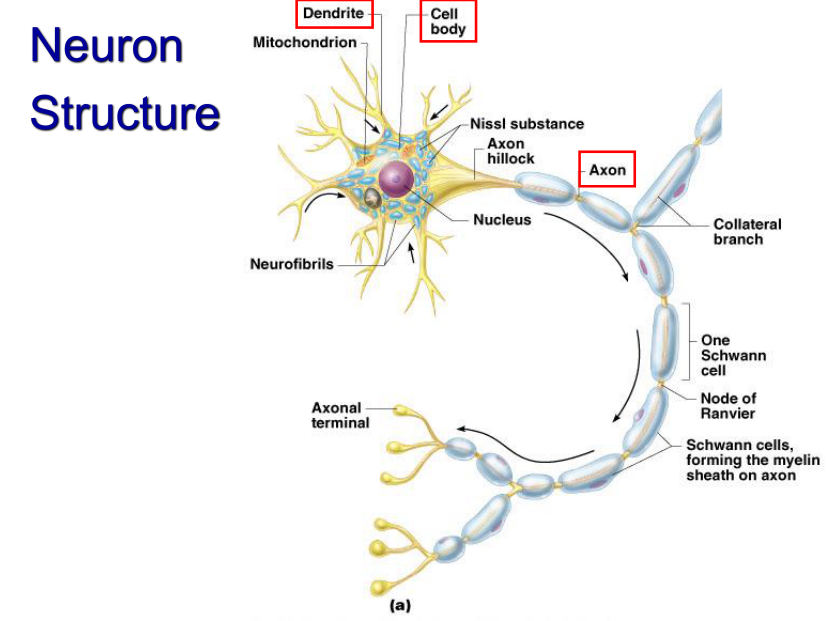
Slide 3 — full source text + original diagram
Neurons (Nerve Cells)
– Functional unit of the nervous tissue
– Composed of body, axon, and dendrites
• Function:
– Electrical signaling ( Conduction of Nerve
Impulses)
Nerve Cell Body (Soma)
• nucleus
• Nucleolus
• Nissl bodies
• Axon hillock
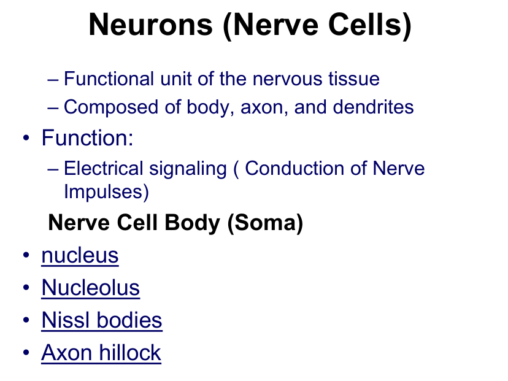
Slide 4 — full source text + original diagram
(Visual-only slide: inspect the complete original diagram below.)
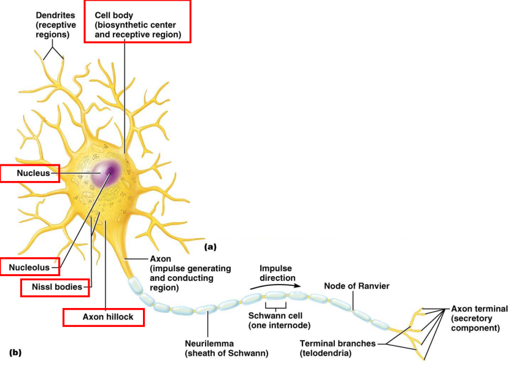
Slide 5 — full source text + original diagram
Axons: Structure
• Slender processes of uniform diameter
arising from the hillock
• Long axons are called nerve fibers
• Usually there is only one unbranched axon
per neuron
• Axonal terminal – branched terminus of an
axon
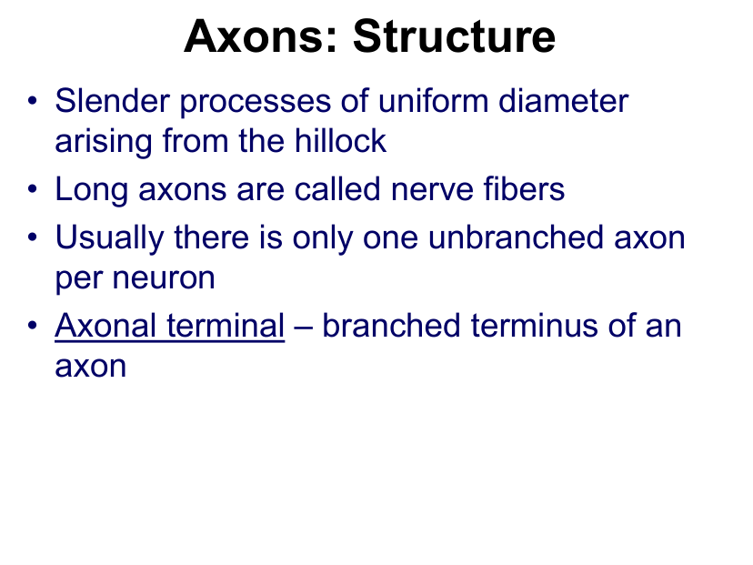
Slide 6 — full source text + original diagram
Axons: Function
• Generate and transmit action potentials
• Secrete neurotransmitters from the axonal
terminals
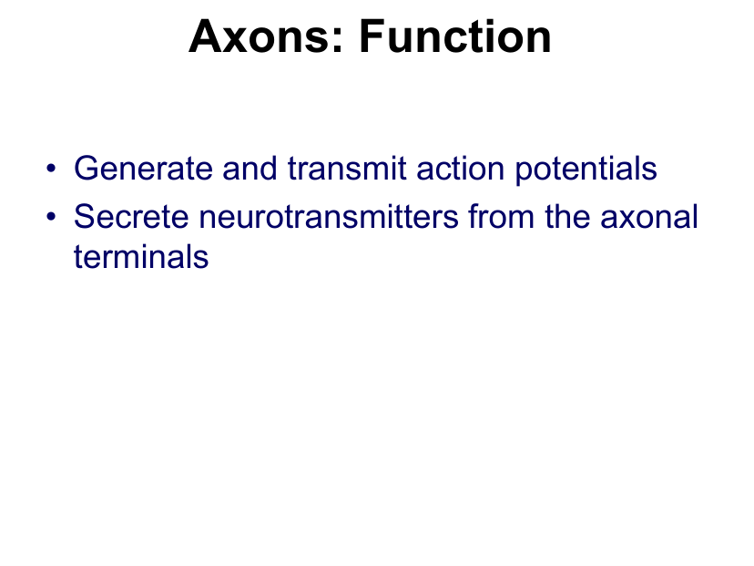
2. Overview of neuroglia and CNS glial cells · Slides 7–9
Neuroglia are diverse supporting cells in the CNS and PNS. They maintain ion and neurotransmitter balance, support neurons, provide immune defence, participate in protective barriers, and form myelin. Unlike neurons, they do not conduct typical neuronal action potentials.
The four CNS cell classes are astrocytes, oligodendrocytes, microglia, and ependymal cells. Oligodendrocytes are especially associated with white matter. One oligodendrocyte can myelinate portions of multiple CNS axons. Myelin permits rapid saltatory conduction between nodes of Ranvier. Multiple sclerosis is a CNS demyelinating disease.
Slide 7 — full source text + original diagram
INTRODUCTION
Neuroglia (glial cells) = “supporting cells” of nervous tissue.
Present in both CNS and PNS.
Functions:
Provide structural support for neurons.
Maintain homeostasis (ion and neurotransmitter balance).
Produce myelin for insulation.
Act as immune defence in CNS.
Form protective barriers (e.g., blood-brain barrier).
Differences from neurons:
More numerous than neurons.
Do not conduct action potentials (nerve impulses).
Smaller in size but diverse in morphology.
www.vision.edu.sa
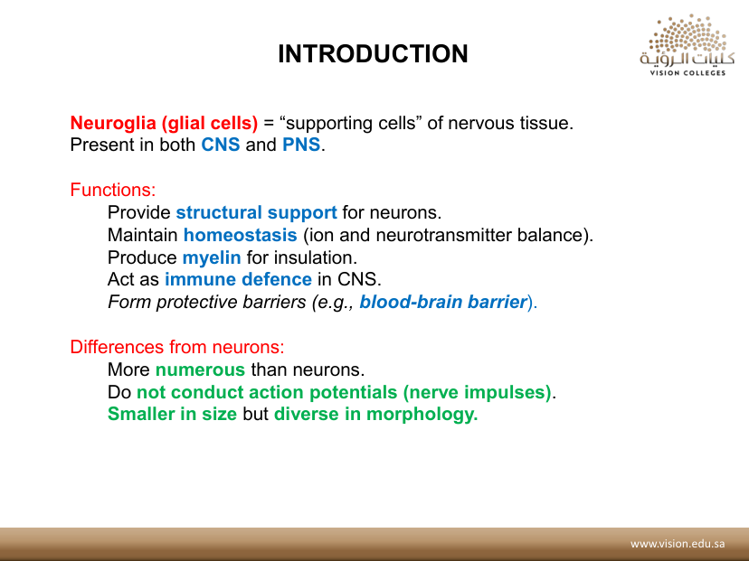
Slide 8 — full source text + original diagram
Glia:
In the central nervous system, there are four types of glial cells:
Astrocytes, Oligodendrocytes, Microglia and Ependymal cells
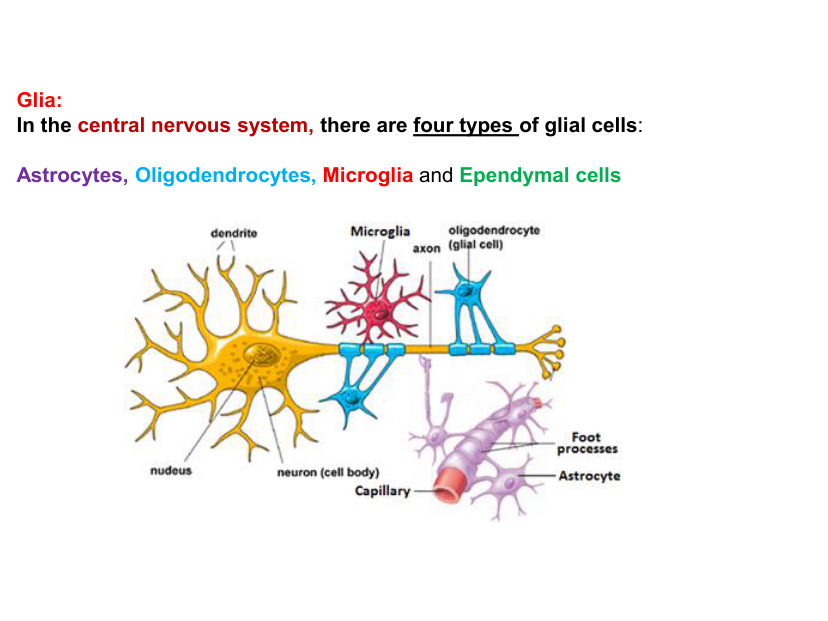
Slide 9 — full source text + original diagram
Neuroglia of the CNS
1. Oligodendrocytes
Found in white > gray matter.
Produce myelin sheath around axons.
Each oligodendrocyte myelinates
multiple axons.
Key role in saltatory conduction (fast
nerve impulse transmission at nodes of
Ranvier).
Clinical note: Degeneration →
demyelinating diseases (e.g., Multiple
Sclerosis).
www.vision.edu.sa
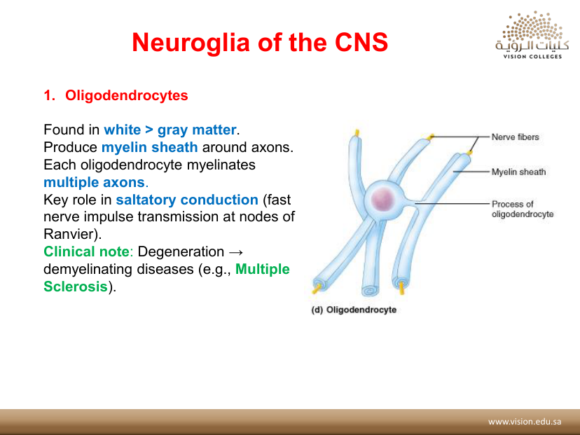
3. Astrocytes: subtypes and clinical role · Slides 10–11
Astrocytes are star-shaped with processes and perivascular end-feet. Protoplasmic astrocytes occur mainly in grey matter and are highly branched, supporting synapses, removing excess neurotransmitters, and buffering extracellular potassium. Fibrous astrocytes are prevalent in white matter and generally have fewer branches.
Other specialised glial examples noted in the slides include pituicytes of the neurohypophysis, Müller cells in the retina, and olfactory ensheathing cells of olfactory pathways. Astrocytes provide mechanical/metabolic support, growth factors, and the glia limitans, and help maintain the blood–brain barrier through signalling to endothelial tight junctions. Following damage, astrocyte hypertrophy/proliferation contributes to gliosis and glial scar formation.
Slide 10 — full source text + original diagram
2. Astrocytes
Star-shaped cells with many processes
ending in end-feet.
Types:
Protoplasmic astrocytes: in gray
matter, highly branched, surround
synapses, absorb excess
neurotransmitters, regulate
potassium.
Fibrous astrocytes: in white matter,
less branched.
Special subtypes:
Pituicytes (neurohypophysis).
Olfactory ensheathing cells (olfactory
nerve/bulbs).
Müller cells (retina).
www.vision.edu.sa
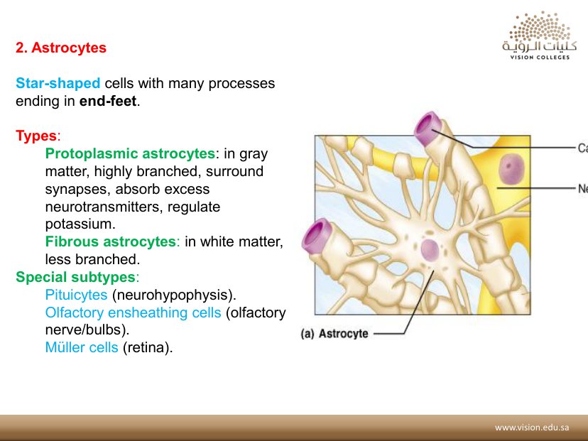
Slide 11 — full source text + original diagram
Functions:
1- Support and nutrition of neurons.
2- Maintain ion balance.
3- Blood-brain barrier formation (induce tight junctions in
capillaries).
4- Glia limitans (barrier between CNS and pia mater).
5- Release growth factors for neuronal survival and repair.
Pathology: Gliosis → formation of astrocytic scars after
injury.
www.vision.edu.sa
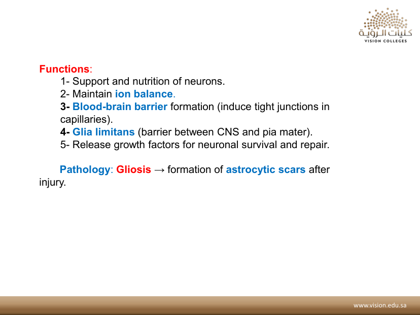
4. Microglia, ependyma, and grey/white matter · Slides 12–14
Microglia are small resident CNS immune cells: they survey tissue, phagocytose debris/pathogens/dead cells, and release inflammatory mediators during injury. The lecture places them in the monocyte/macrophage lineage; more precisely, resident microglia arise mainly from embryonic yolk-sac progenitors.
Ependymal cells form an epithelial-like lining of ventricles and the spinal central canal. They can be cuboidal or columnar. The lecture distinguishes ependymocytes (CSF–tissue exchange), choroidal epithelial cells (choroid plexus and CSF production/regulation), and tanycytes near the third ventricle (CSF-related signalling and exchange with surrounding tissues/vessels). Review the illustrations to locate microglia, the ventricular lining, and the distribution of glia in white versus grey matter.
Slide 12 — full source text + original diagram
4. Ependymal Cells3. Microglia
Epithelial-like cells lining ventricles and centralSmallest glial cells, ~5% of CNS
canal.glia.
Can be cuboidal or columnar.Origin: monocyte/macrophage
Subtypes:lineage (mesodermal).
Choroidal epithelial cells: form part ofFunctions:
choroid plexus, regulate cerebrospinal Immune defence of CNS.
fluid (CSF). Phagocytosis of debris,
Ependymocytes: most common, help pathogens, and dead neurons.
exchange CSF with brain tissue. Release cytokines in
Tanycytes: in hypothalamus (3rd ventricle inflammation.
floor), connect CSF with blood vessels.Normally quiescent (dormant),
Functions:become active in injury or disease.
Secretion, circulation, and regulation of
CSF.
www.vision.edu.sa
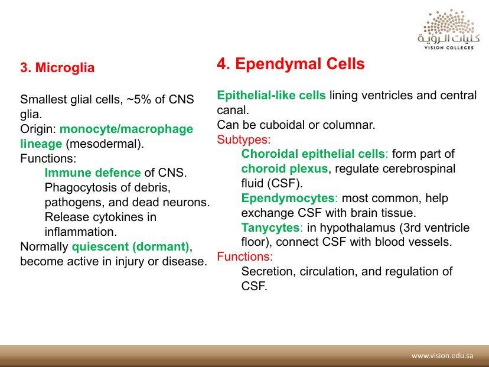
Slide 13 — full source text + original diagram
Microglia and Ependymal Cells
Figure 11.3b, c
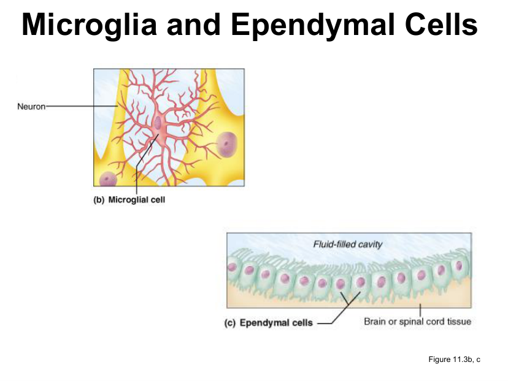
Slide 14 — full source text + original diagram
Gray matter
White matter
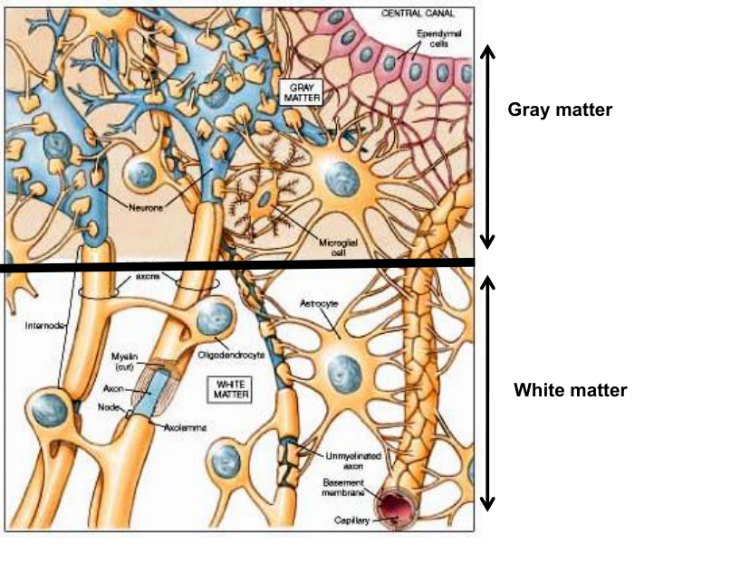
5. PNS glial cells and fiber types · Slides 15–17
The peripheral nervous system has two main glial groups. Schwann cells (neurolemmocytes) wrap axons; a single myelinating Schwann cell insulates one axonal internode and contributes its cytoplasmic outer neurilemma, aiding peripheral nerve repair and formation of regeneration pathways. Adjacent internodes are separated by nodes of Ranvier.
Satellite cells surround neuronal cell bodies in sensory and autonomic ganglia and regulate metabolic support and the local ionic microenvironment, functionally resembling CNS astrocytes. The lecture's simplified nerve fiber categories: A thick and rapid; B intermediate; C thin, unmyelinated and relatively slow.
Slide 15 — full source text + original diagram
Neuroglia of the PNS
1. Schwann Cells (Neurolemmocytes)
Analogous to oligodendrocytes.
Each Schwann cell myelinates only one axon segment.
Wraps around axon → forms myelin sheath.
Important for nerve regeneration after injury.
Leave nodes of Ranvier between myelin segments.
Nerve Fiber classification based on myelination:
Type A fibers: thick, fast conduction.
Type B fibers: intermediate.
Type C fibers: thin, unmyelinated, slow conduction.
www.vision.edu.sa
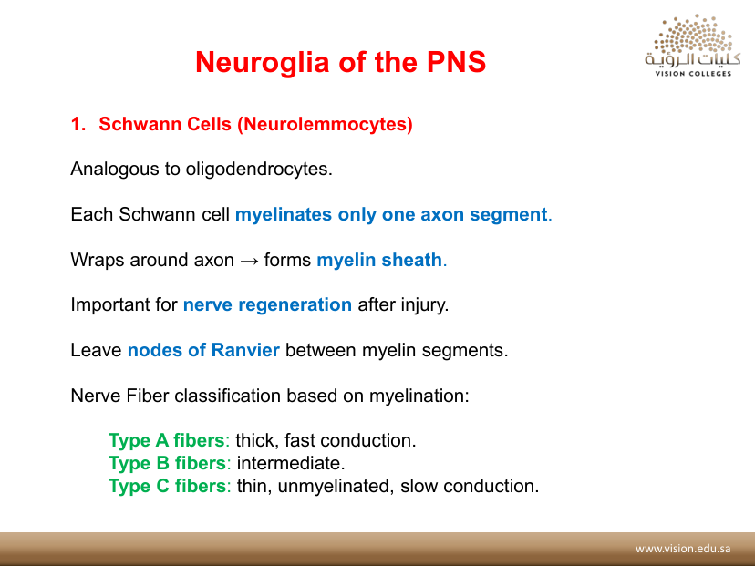
Slide 16 — full source text + original diagram
2. Satellite Cells
Found in sensory and autonomic ganglia.
Surround neuronal cell bodies.
Functions:
1- Provide structural and metabolic support.
2- Regulate microenvironment (similar to astrocytes in CNS).
www.vision.edu.sa
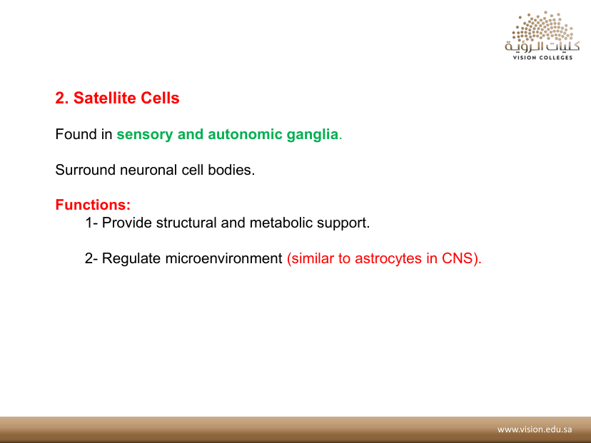
Slide 17 — full source text + original diagram
Schwann Cells and Satellite Cells
IN PNS
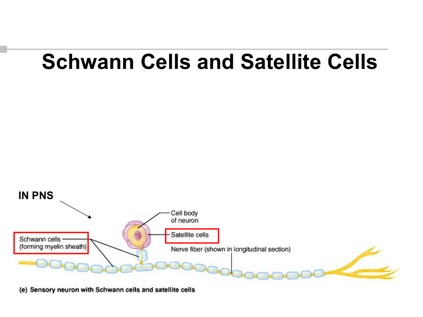
6. Clinical effects of gliosis and demyelination · Slides 18–18
After CNS injury, astrocytes become reactive, enlarge and may proliferate, forming gliosis and scar tissue. Loss or injury of myelin reduces effective conduction and may cause motor, sensory, or cognitive symptoms. The source contrasts MS (central demyelination) with Guillain–Barré syndrome (peripheral nerve demyelination in the common AIDP form).
Slide 18 — full source text + original diagram
Clinical Correlations
Astrocytic scars (Gliosis)
Response to injury:
proliferation/hypertrophy of astrocytes
to fill damaged areas.
Release inflammatory mediators.
Demyelination
Loss of myelin → impaired conduction.
Examples:
Multiple Sclerosis (MS) – CNS,
autoimmune demyelination.
Guillain-Barré Syndrome – PNS
demyelination.
Can cause motor, sensory, and
cognitive deficits.
www.vision.edu.sa
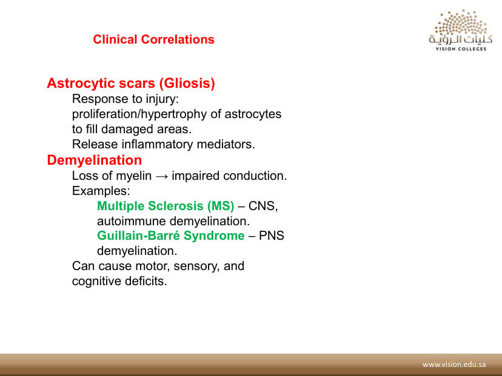
7. Myelin histology and formation · Slides 19–23
Myelin is a multilayered lipid–protein membrane wrapping an axon. It acts as an electrical insulator, increases impulse conduction velocity and reduces energy expenditure. Myelination is performed by oligodendrocytes in the CNS and Schwann cells in the PNS.
CNS oligodendrocytes can myelinate several axons and do not form a peripheral-style neurilemma. Peripheral Schwann cells wrap an individual internode, retain cytoplasm/nucleus in the neurilemma, and support regeneration after appropriate injury. Axonal regeneration in the CNS is relatively poor, also owing to inhibitory molecular cues and the CNS injury environment. Follow the step-by-step Schwann wrapping diagram on slide 22 and compare it with oligodendrocyte myelination on slide 23.
Slide 19 — full source text + original diagram
Histology of Myelin Sheath and Myelination
Introduction
Axons carry electrical impulses (action potentials) from the
neuron cell body to terminals.
Many axons are covered by a myelin sheath =
multilayered lipid–protein wrapping.
Myelination = process of forming the myelin sheath.
Purpose: insulates axons, increases conduction
velocity, reduces energy cost.
www.vision.edu.sa
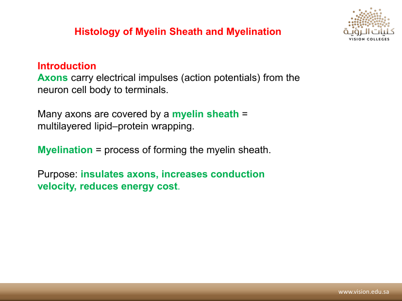
Slide 20 — full source text + original diagram
Cells Involved in Myelination
Oligodendrocytes (CNS):
Each oligodendrocyte myelinates multiple axons.
No neurilemma (cell body is separate from
sheath).
CNS axon regeneration is poor due to inhibitory
factors + lack of neurilemma.
Schwann Cells (PNS):
Each Schwann cell myelinates only one axon
segment (~1 mm).
Form neurilemma (outermost layer containing
cytoplasm & nucleus).
Aid in axon regeneration by forming regeneration
tubes.
www.vision.edu.sa
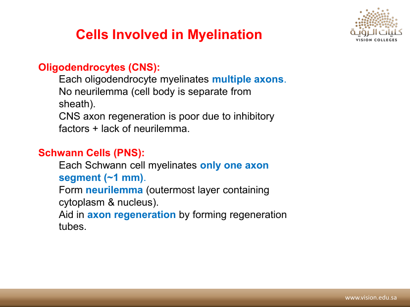
Slide 21 — full source text + original diagram
Structure of Myelin Sheath
Composition: Rich in lipids + proteins → whitish, fatty
appearance.
Nodes of Ranvier: gaps between myelin segments → high
density of sodium/potassium channels.
Enable saltatory conduction (impulse “jumps” from node
to node).
Conduction velocity:
Faster in myelinated axons.
Unmyelinated: much slower.
www.vision.edu.sa
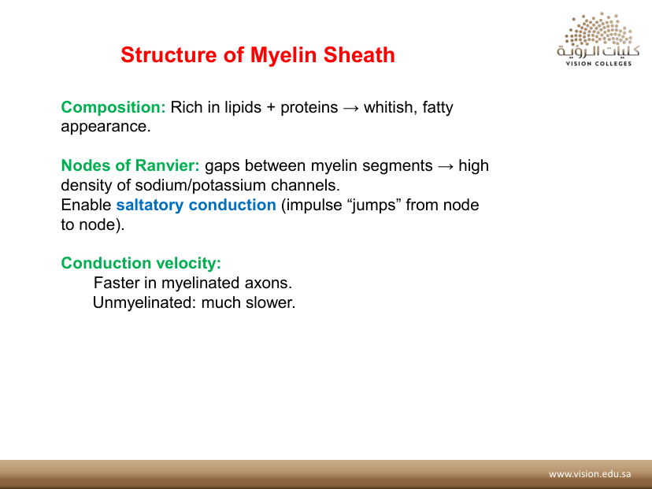
Slide 22 — full source text + original diagram
Myelin Sheath and
Neurilemma: Formation
Figure 11.5a-d
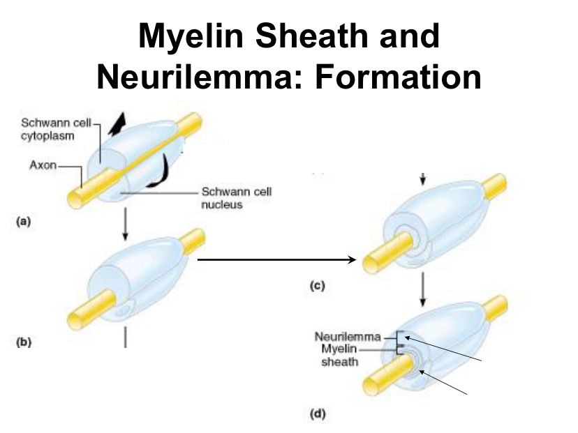
Slide 23 — full source text + original diagram
Myelin Sheath Formation
(CNS)
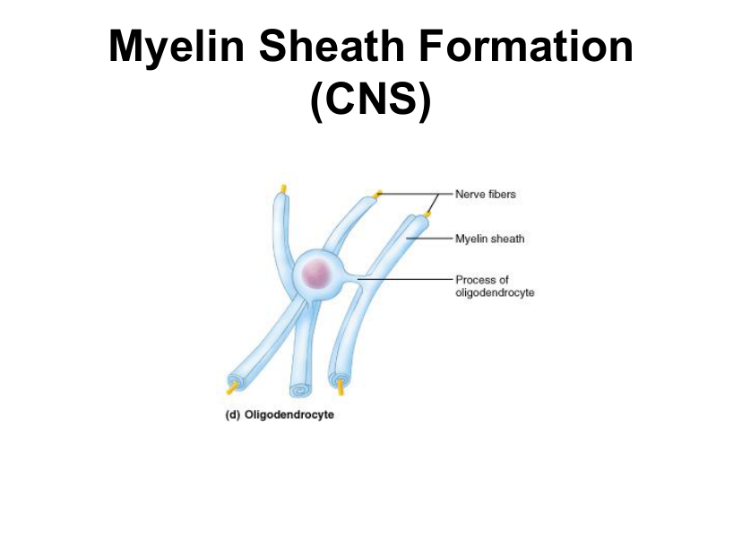
8. Nodes of Ranvier and conduction · Slides 24–26
Nodes of Ranvier are gaps between myelinated internodes. Voltage-gated sodium channels are concentrated at the nodes, supporting regeneration of action potentials during saltatory conduction. Depolarisation effectively propagates rapidly between nodes, rather than actively propagating continuously along the entire myelinated membrane. Myelin improves speed and energy efficiency.
The lecture specifically illustrates PNS nodes between neighbouring Schwann-cell segments and notes that axonal branches can emerge near nodes. Examine the labelled axonal figures on slides 24–25.
Slide 24 — full source text + original diagram
Nodes of Ranvier (Neurofibral
Nodes)
• Gaps in the myelin sheath between
adjacent Schwann cells
• They are the sites where collaterals can
emerge (see 1st neuron pic)
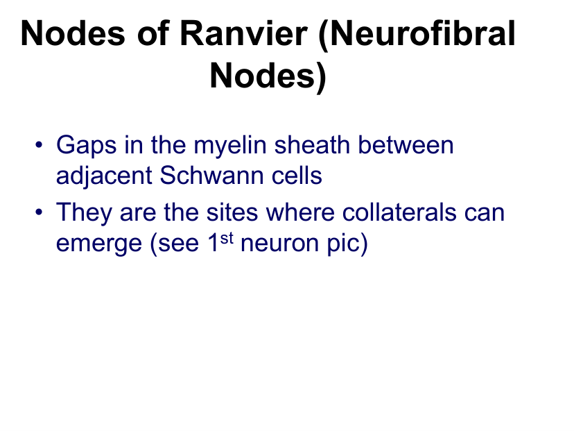
Slide 25 — full source text + original diagram
(Visual-only slide: inspect the complete original diagram below.)
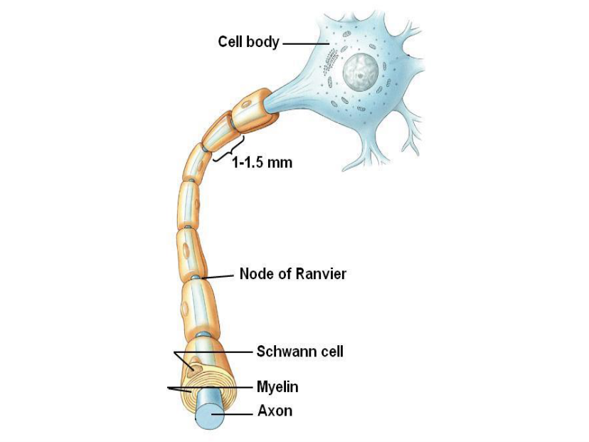
Slide 26 — full source text + original diagram
Functions of Myelin Sheath
Electrical insulation of axons. Separates axon from
extracellular environment.
Increases conduction velocity.
Reduces metabolic cost of impulse transmission.
www.vision.edu.sa
Demyelination disrupts conduction; multiple sclerosis is a major CNS example. A schwannoma is a typically benign tumour of Schwann-cell lineage. Vestibular schwannoma involving cranial nerve VIII may present with unilateral hearing loss, tinnitus, and in larger lesions additional cranial-nerve or brainstem symptoms. Treatment is individualised and can include observation, radiotherapy or surgery, rather than surgery for every patient.
Slide 27 — full source text + original diagram
Clinical Correlations
Demyelination:
Loss of myelin → impaired conduction.
Causes: Multiple sclerosis (CNS).
Leads to neurological deficits (motor, sensory, cognitive).
Schwannoma (Neurilemmoma):
Benign tumour of Schwann cells (PNS).
Often in head/neck, commonly on vestibulocochlear nerve
(CN VIII) → acoustic neuroma.
Symptoms: unilateral hearing loss, tinnitus, sometimes facial
paralysis.
Treated by surgery; prognosis usually good.
www.vision.edu.sa
24 source-based questions. Select one answer to reveal the correct choice and explanation.
·
Complete original lecture — all 28 slides
Slide images are included locally and remain available without internet. Search extracted text to locate relevant slides; purely visual slides may not be found by text search.
The two URLs are preserved exactly as supplied. Their content and type could not be verified externally; neither link is mislabeled as a specific audio or video format. Internet access and appropriate NotebookLM permissions may be needed.